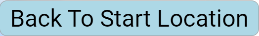
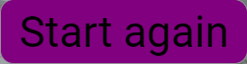

PassPath
A potential alternative to the traditional password system
PassPath asks the user to plot a route of their choosing, using google maps street view.
Anywhere in the world.
PassPath then stores this route as your way of authenticating with the given system.
When that same user wants to access the system they simply need to repeat the route they initially gave the system.
PassPath provides some helpful features to make interaction a little easier.
 - This button will take you back to the location where you clicked start and allow you to reposition the start of your PassPath.
 - This button will reset your PassPath attempt and allow you to enter a different name and a completely different PassPath. It does the same as refreshing the browser.
Begin